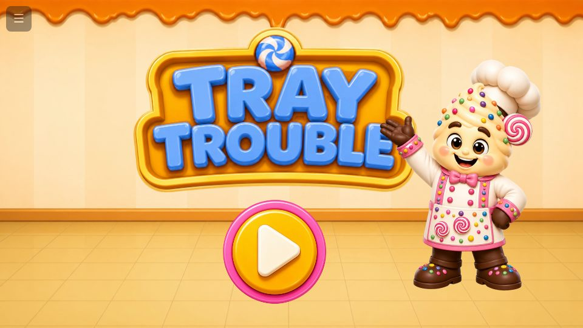
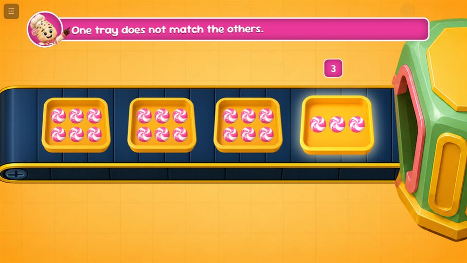
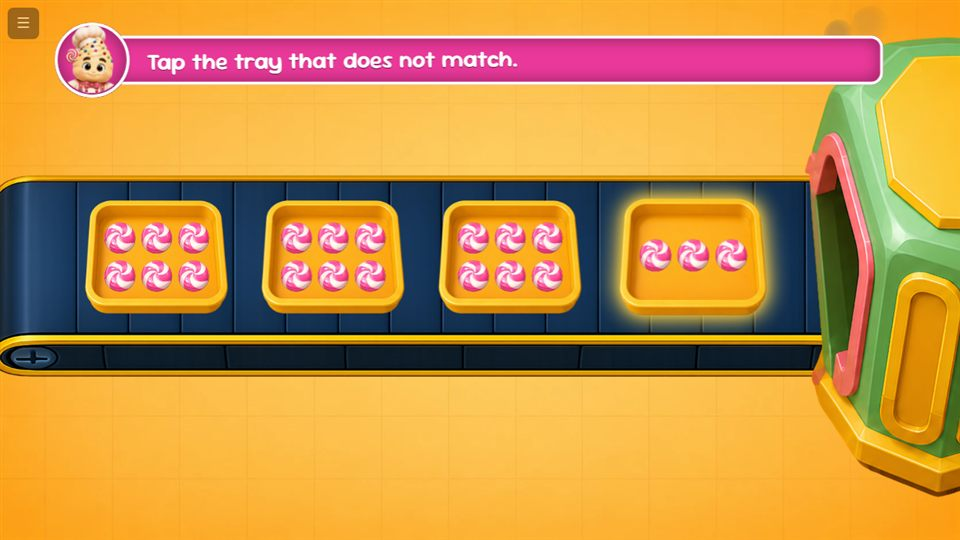
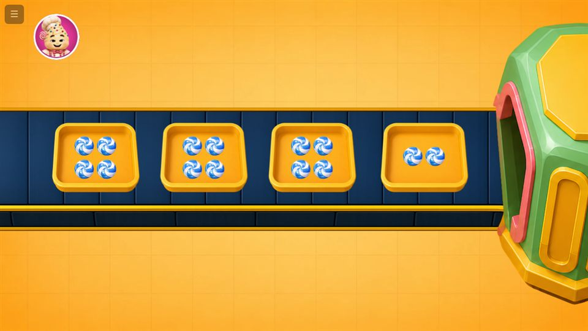

Case Study · 01
Game-Based Learning for K–12
Curriculum concepts turned into playable browser games — designed in Figma, built in vanilla JS, shipped to real classrooms.
A note on what you'll see here. These games are built for a client and protected by an NDA — so this page shows my role, process, and craft rather than client screens or assets. To experience the craft first-hand, play Tray Trouble ↗ — a learning game I designed and built end-to-end.
Overview
I own the full lifecycle of interactive learning games for K–12 students: taking a curriculum concept, turning it into a game mechanic a child actually wants to play, designing every screen and state in Figma, and then building the whole thing myself in vanilla HTML, CSS and JavaScript as a production-ready module, working within a cross-functional POD team.
Because I'm both the designer and the developer, there is no handoff gap — the drag physics, the reward timing, the way a hint appears when a child hesitates: what I design is exactly what ships.
The problem
Traditional learning content struggles to hold a young learner's attention. Each module has to teach a real curriculum concept while feeling like pure play — which means mechanics, difficulty pacing and feedback loops must be designed around how children actually learn. And it all has to run smoothly in the browser on whatever device a school has: low-end phones, shared tablets, smartboards.
The approach
Learning-first and end-to-end. The concept drives the mechanic — never the other way around. I prototype flows in Figma, test the interaction feel early, then build in dependency-free vanilla JS (chosen for lightweight builds that load fast on weak school connections). One person owning design and code means every detail survives to production.
How I work
Learning-first design
Translating curriculum concepts into game mechanics, user flows and interaction models suited to young learners — the lesson is the game, not a quiz bolted onto one.
Game UI & feedback systems
High-fidelity game visuals, storybook assets, reward loops, and layered guidance — demonstration hints, idle nudges, and mistake recovery for kids who get stuck, celebration moments for kids who don't.
Build & ship
Production builds in vanilla HTML, CSS and JavaScript — responsive from phone to smartboard, tuned to stay smooth on low-end hardware.
Craft notes from the build side
A few engineering patterns this work drilled into me — the kind of thing you only learn by shipping games to real classrooms:
- A fixed-aspect game stage that scales as one unit, with all positions in relative units — responsiveness comes free instead of being fought screen by screen.
- Animate only what the compositor can handle (transform, opacity, clip-path) — the difference between 60fps and a stuttering game on a cheap tablet.
- Drag-and-drop built on Pointer Events with capture, so mouse, touch and stylus all behave identically.
- Kids don't read instructions — guidance has to be shown, not told: ghost demonstrations, inactivity nudges, and forgiving mistake handling.
See it: Tray Trouble
Screens from Tray Trouble — the engineering and interaction systems described on this page, in a game you can play:




What shipped
- 4+ educational games and 2+ interactive story flipbooks for K–12 learners, live in production — each flipbook a complete story with games woven in
- Every game developed end-to-end in vanilla HTML, CSS and JavaScript — no frameworks, no build step
- Game mechanics, interactions and feedback systems that measurably improve learner engagement
- Storybook assets, game visuals and interactive UI produced alongside the code
- When the QA workflow for these games became the bottleneck, I built an in-app visual QA tool to replace the bug spreadsheets — its own case study